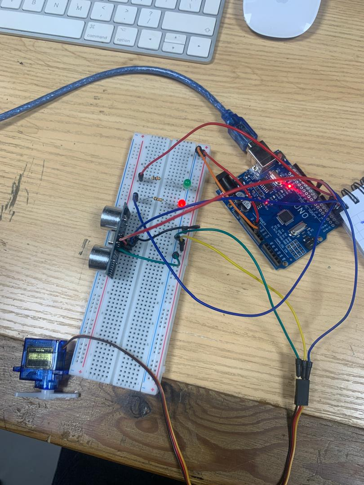
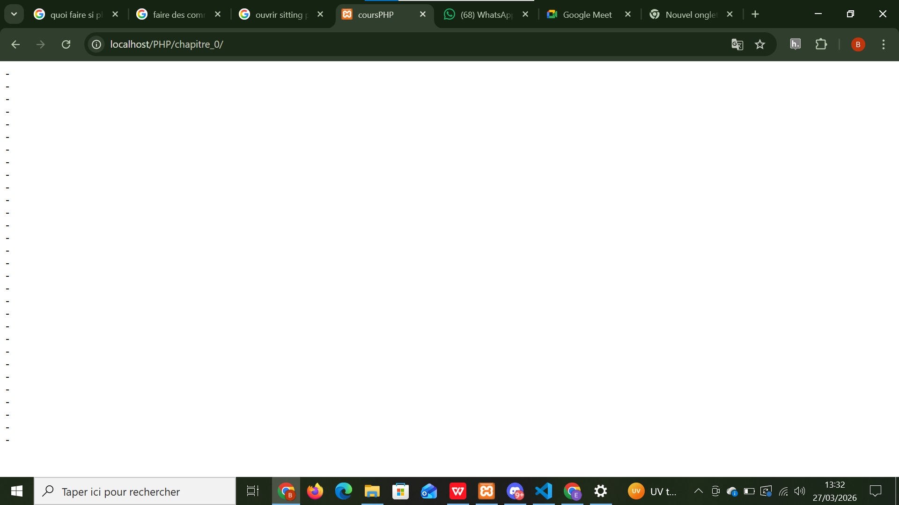

cours
Mes-projets-classes
Projet-IOT : POUBELLE INTELLIGENTS
la porte de la poubelle s'ouvre à l'approche d'un objets grace au capteur ultrason qui detecte le mouvement de l'objet . Et le servomoteur ouvre la porte de la poubelle. ce processus obeis à la aux instructions qu'on à déjà saisie au niveau de IDE arduino

Projet-PHP : FONCTION QUI AFFICHE 10 TIRETS

Et voici le resultats .

Projet-IOT : CREATION D'UN RESEAU